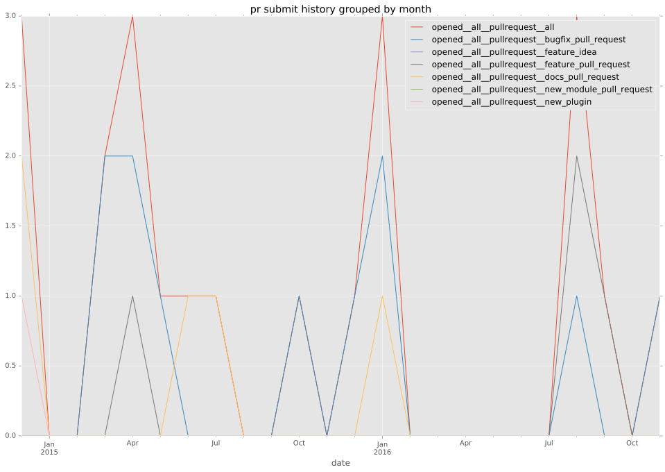
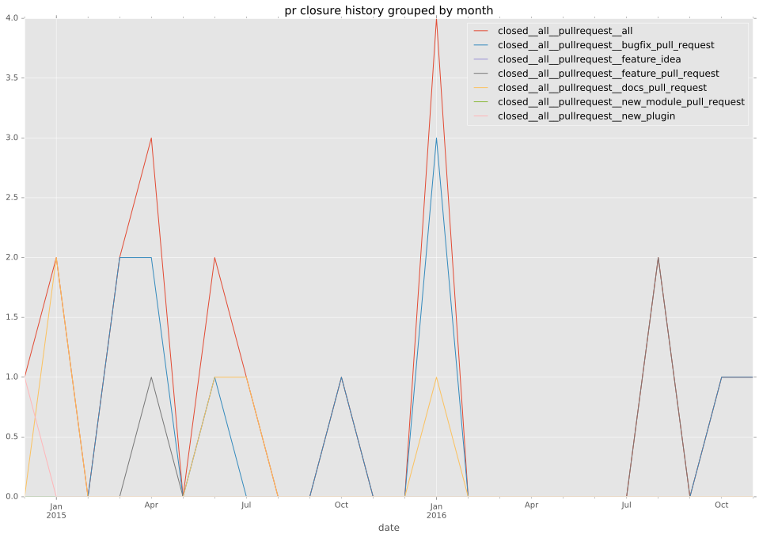

authors
- rosmo
maintainers
- rosmo
contributors
- jarrpa : 2 commits
- brwilson : 3 commits
- afunix : 6 commits
- abadger : 2 commits
- ypid : 2 commits
- tylerturk : 1 commits
- sivel : 2 commits
- bcoca : 81 commits
- rnowling : 15 commits
- resmo : 1 commits
- hswong3i : 6 commits
- Jmainguy : 1 commits
- ottok : 6 commits
- jgeusebroek : 4 commits
- chris-l-weber : 2 commits
- vvanholl : 1 commits
- nailgun : 10 commits
total issue counts
bugfix pull request: 11
pullrequest: 21
docs pull request: 5
feature pull request: 4
feature idea: 4
issue: 16
new plugin: 1
bug report: 12
issue history
pullrequest history


days open by issue type
feature pull request
count: 6
std: 9.85224170769
min: 0
max: 20
median: 2.0
mean: 7.33333333333
all
count: 50
std: 55.4201945069
min: 0
max: 255
median: 1.5
mean: 21.7
pullrequest
count: 0
std: nan
min: nan
max: nan
median: nan
mean: nan
docs pull request
count: 8
std: 1.51185789204
min: 0
max: 4
median: 0.0
mean: 1.0
bugfix pull request
count: 21
std: 13.1230440719
min: 0
max: 39
median: 1.0
mean: 8.71428571429
feature idea
count: 3
std: 131.073770577
min: 4
max: 255
median: 195.0
mean: 151.333333333
issue
count: 0
std: nan
min: nan
max: nan
median: nan
mean: nan
new plugin
count: 2
std: 0.0
min: 5
max: 5
median: 5.0
mean: 5.0
bug report
count: 10
std: 74.6520819089
min: 0
max: 234
median: 1.5
mean: 38.6
closures grouped by total days open